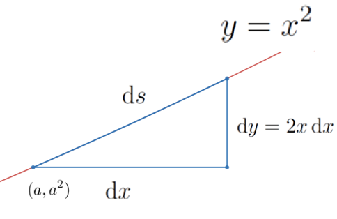

A Vulgar Mechanick can practice what he has been taught or seen or done, but if he is in an error he knows not how to find it out and correct it, and if you put him out of his road, he is at a stand; Whereas he that is able to reason nimbly and judiciously about figure, force and motion, is never at rest till he gets over every rub.
As we observed in Section 4.3 Newton, Leibniz, and their contemporaries extended the Principle of Local Linearity to its logical limit. They said if you cut out an infinitely small section of a curve then the section actually is an infinitely short straight line segment. Of course we are quite familiar with infinitely short line segments. We call them differentials.

Leibniz called a triangle whose sides are differentials, like the blue triangle in the figure above, a differential triangle
In the figure \(\dx{y}\) and \(\dx{x}\) are differentials in the vertical and horizontal directions, respectively. But \(\dx{s}\) is a differential at the point \((a, a^2)\) in the direction of the curve or, equivalently, in the direction tangent to the curve. Thus \(\dx{s}\) is a differential along the curve, and simultaneously along the line tangent to the curve
The differentials \(\dx{x}\text{,}\) and \(\dx{y}\text{,}\) don’t really tell us much about the graph of \(y=x^2\text{,}\) but the differential ratio, \(\dfdx{y}{x}\text{,}\) does. At each point, \((a, a^2)\text{,}\)\(\dfdx{y}{x}\) gives us the slope of \(\dx{s}\) and the line tangent to the curve at that point. Loosely speaking, the differential ratio \(\dfdx{y}{x}\) gives the slope of the curve at each point.
If we want to find the slope of the curve \(y=x^2\) at the point \((a,a^2)\) we simply find \(\dx{y}\) as usual:\(\dx{y}=2x\dx{x}\text{.}\) Then we take the extra step of dividing through by \(\dx{x}\) to get \(\dfdx{y}{x}=2x\text{.}\) Evaluating this at the point \(x=a\text{,}\)\(y=a^2\text{,}\) and \(\dfdx{y}{x}=2a\) which will give us the slope of the line tangent to the graph of \(y=x^2\) at the point \((a,a^2)\text{.}\)
Drill5.1.1.
Find an equation of the line tangent to the graph of \(y=x^2\) at each of the following points. Compare these results to those obtained using Fermat’s Method in Problem 3.4.10
\(\displaystyle (-2,4)\)
\(\displaystyle (-1,1)\)
\(\displaystyle (0,0)\)
\(\displaystyle (1,1)\)
\(\displaystyle (2,4)\)
DIGRESSION: Evaluation Notation.
We will frequently need to evaluate the expression \(\dfdx{y}{x}\) at different points. This can quickly become very confusing unless we have some way of indicating which point is under consideration. To avoid confusion, we use the notation
when there is no ambiguity. This notation is very flexible. Frequently the \(y\) coordinate will not be in play. In that case we write \(\eval{\dfdx{y}{x}}{x}{a}\) to indicate that we are evaluating \(\dfdx{y}{x}\) at the point \(x=a\text{.}\)
END OF DIGRESSION
Example5.1.2.
For example to compute the slope of the graph of \(y=3x^2-5x\) at \((3,12)\) we use the following three-step process.
(a)
First differentiate \(y=3x^2-5x\) to obtain the differential equation \(\dx{y}=(6x-5)\dx{x}\text{.}\) This relates \(\dx{y}\) and \(\dx{x}\text{.}\)
(b)
Second, from this differential equation we find the ratio \(\dfdx{y}{x}=6x-5.\) This differential ratio tells us the slope of the curve at every point on the curve.
(c)
Third, if we need the value of \(\dfdx{y}{x}\) at a single point like \((3,12)\text{,}\) for example we compute
In this case we could just write: \(\eval{\dfdx{y}{x}}{x}{3}=13\text{,}\) since the \(y\) coordinate never comes into play.
Finally, we emphasize that Leibniz’ notation is deliberately evocative of the notion of slope because when we evaluate the differential ratio at a point it tells us the slope of the curve at that point. In view of the Principle of Local Linearity, this is equivalent to finding the slope of the line tangent to the curve at that point.
This notation probably seems unnecessarily cumbersome and honestly, in some ways it is. But be assured we have not made this choice lightly. This notation has certain advantages that will become apparent later.
It can be easy to get careless or simply confused and write \(\dfdx{y}{x}\) when you mean \(\eval{\dfdx{y}{x}}{x}{a}\text{,}\) and vice versa, so it is important that you have the distinction between them clear in your mind.
Problem5.1.3.
(a)
Explain the difference between \(\dfdx{y}{x}\) and \(\eval{\dfdx{y}{x}}{x}{a}\) carefully and clearly.
(b)
We (the authors) have sometimes had students assert that since \(\dfdx{y}{x}=2x\text{,}\) the equation of the line tangent to the graph of \(y=x^2\) at the point \((a, a^2)\) is
Is this the equation of a line? If you aren’t sure try looking at a special case, say when \(a=3\text{.}\)
(c)
Find the correct formula for line tangent to the graph of \(y=x^2\) at the point \((a, a^2)\text{.}\)
Drill5.1.4.
Find \(\eval{\dfdx{y}{x}}{(x,y)}{(2,2)}\) if \(y=\sqrt{2x}\) and compare this with the slope we obtained in Problem 3.5.6 using Descartes’ Method of Normals.
Problem5.1.5.
Evaluate \(\eval{\dfdx{y}{x}}{x}{a}\) for the following functions at each of the given values of \(x\text{.}\)
There is real temptation at this point to cut corners and compute the differential ratio \(\dfdx{y}{x}\) all in one step. On purely practical grounds, we urge you to differentiate first and then divide by \(\dx{x}\) in two separate steps. Our reasons are two–fold. First, the rules we’ve learned are differentiation rules. They were designed to compute differentials, not differential ratios. Second, in applications to come we will see that dividing by \(\dx{x}\) will not always move the solution process forward. It can sometimes even get in the way, depending on the problem.
Nonetheless, as you gain more experience and a deeper understanding you will find yourself gravitating toward the differential ratio more and more. This is a normal progression. As we have said before differentials are an intermediate step, a convenient fiction. You don’t want to become tied to them for life.